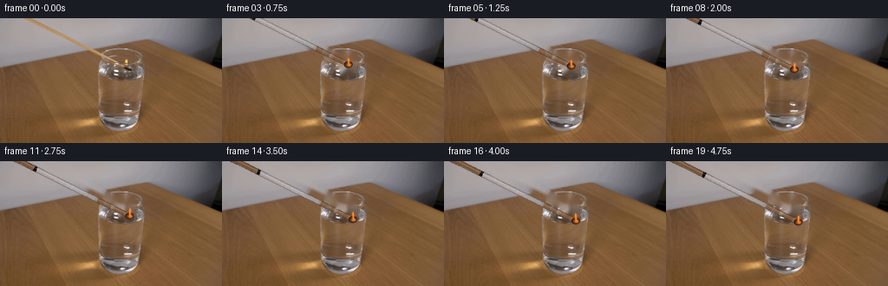
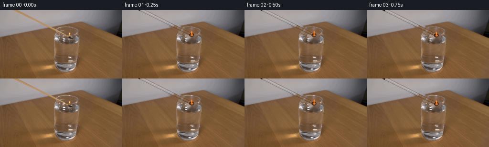
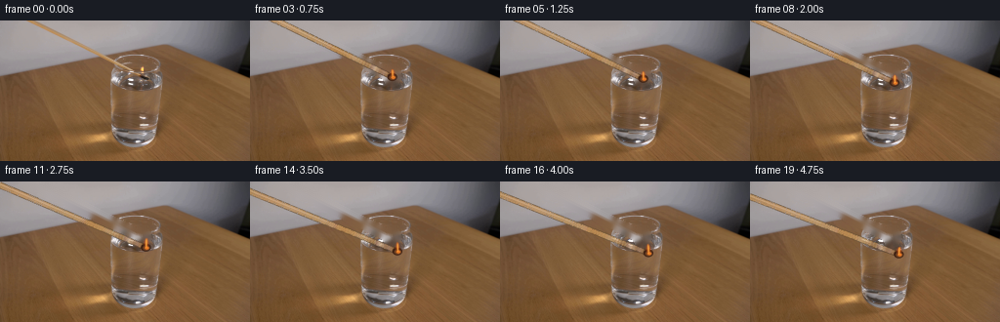
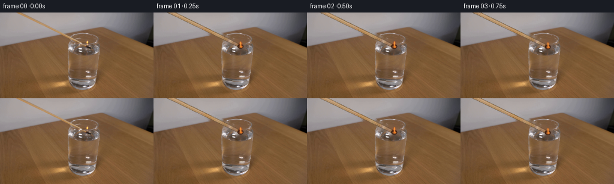
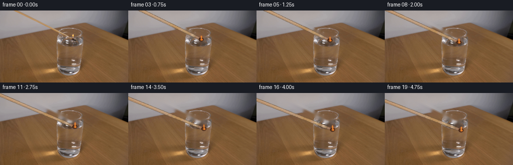
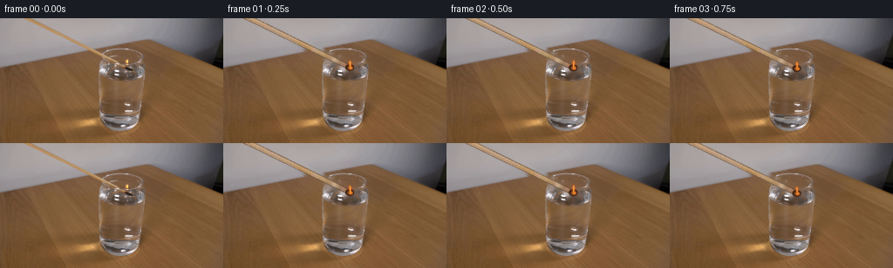

CODING AGENTS AS PIXEL WORLD MODELS
traex/DeepSeek-V4.1-Flash · 0109
点击播放 · 原生 RGB 像素
逐轮保存的候选
回放视频、检查图与代码变化。
每份候选均可单独播放。实际图片检查记录在下方工具轨迹中。
候选 01播放与检查图
点击播放 · 原生 RGB 像素

展开代码变化
--- 上一保存版本
+++ 本次保存版本
@@ -0,0 +1,190 @@
+from pathlib import Path
+
+import cv2
+import numpy as np
+from PIL import Image, ImageDraw
+
+import artifact_io
+
+
+CASE_DIR = Path(__file__).resolve().parent
+WIDTH = 256
+HEIGHT = 144
+FRAMES = 20
+FPS = 4
+SUPERSAMPLE = 4
+
+
+def smoothstep(value):
+ value = np.clip(value, 0.0, 1.0)
+ return value * value * (3.0 - 2.0 * value)
+
+
+def shaft_y(x, head_y=52.0):
+ # The supplied match runs from the upper-left edge to a head at x=145.
+ return head_y + 0.50 * (x - 145.0)
+
+
+def make_clean_plate(frame):
+ mask = np.zeros((HEIGHT, WIDTH), dtype=np.uint8)
+ for x in range(24, 149):
+ y = int(round(shaft_y(x)))
+ cv2.line(mask, (x, y), (x, y), 255, thickness=9)
+
+ head_mask = np.zeros_like(mask)
+ cv2.ellipse(head_mask, (144, 52), (10, 14), 0, 0, 360, 255, -1)
+ mask = cv2.bitwise_or(mask, head_mask)
+ mask = cv2.dilate(mask, np.ones((3, 3), np.uint8), iterations=1)
+
+ plate = cv2.inpaint(frame, mask, 4, cv2.INPAINT_TELEA)
+ return plate.astype(np.float32)
+
+
+def sampled_shaft_colors(frame):
+ colors = []
+ for x in range(24, 149):
+ y = int(round(shaft_y(x)))
+ patch = frame[max(0, y - 1):min(HEIGHT, y + 2), max(0, x - 1):min(WIDTH, x + 2)]
+ colors.append(np.median(patch.reshape(-1, 3), axis=0))
+ return np.asarray(colors, dtype=np.float32)
+
+
+def draw_match(frame, colors, dx, dy, phase):
+ scale = SUPERSAMPLE
+ overlay = Image.new("RGBA", (WIDTH * scale, HEIGHT * scale), (0, 0, 0, 0))
+ draw = ImageDraw.Draw(overlay)
+
+ head_x = 145.0 + dx
+ head_y = 52.0 + dy
+ left_x = -4.0 + dx
+ left_y = shaft_y(left_x - dx, head_y=head_y)
+
+ steps = 190
+ for index in range(steps):
+ t0 = index / steps
+ t1 = (index + 1) / steps
+ x0 = left_x + (head_x - left_x) * t0
+ y0 = left_y + (head_y - left_y) * t0
+ x1 = left_x + (head_x - left_x) * t1
+ y1 = left_y + (head_y - left_y) * t1
+ source_x = int(np.clip(round(24 + (x0 - dx - 24) * 125 / 121), 24, 148))
+ base = colors[source_x - 24]
+ edge = np.clip(base * 0.62, 0, 255).astype(np.uint8)
+ width = 5.6 - 1.1 * t0
+
+ draw.line(
+ ((x0 * scale, y0 * scale), (x1 * scale, y1 * scale)),
+ fill=tuple(edge.tolist()) + (255,),
+ width=int(round((width + 1.4) * scale)),
+ )
+ draw.line(
+ ((x0 * scale, y0 * scale), (x1 * scale, y1 * scale)),
+ fill=tuple(base.astype(np.uint8).tolist()) + (255,),
+ width=int(round(width * scale)),
+ )
+ highlight = np.clip(base * 1.13 + np.array([7, 4, 0]), 0, 255).astype(np.uint8)
+ draw.line(
+ ((x0 * scale, (y0 - 0.8) * scale), (x1 * scale, (y1 - 0.8) * scale)),
+ fill=tuple(highlight.tolist()) + (185,),
+ width=max(1, int(round(1.15 * scale))),
+ )
+
+ # Small charred head with a hot lower edge.
+ cx = int(round(head_x * scale))
+ cy = int(round(head_y * scale))
+ draw.ellipse(
+ (cx - 5 * scale, cy - 4 * scale, cx + 5 * scale, cy + 4 * scale),
+ fill=(55, 31, 20, 255),
+ )
+ draw.ellipse(
+ (cx - 3 * scale, cy - 2 * scale, cx + 4 * scale, cy + 3 * scale),
+ fill=(112, 65, 33, 255),
+ )
+ draw.ellipse(
+ (cx - 1 * scale, cy - 1 * scale, cx + 3 * scale, cy + 2 * scale),
+ fill=(226, 121, 39, 255),
+ )
+
+ overlay = overlay.resize((WIDTH, HEIGHT), Image.Resampling.LANCZOS)
+ rgba = np.asarray(overlay, dtype=np.float32)
+ alpha = rgba[..., 3:4] / 255.0
+ frame[:] = frame * (1.0 - alpha) + rgba[..., :3] * alpha
+
+ add_flame(frame, head_x, head_y, phase)
+
+
+def add_flame(frame, head_x, head_y, phase):
+ height = 9.0 + 1.3 * np.sin(phase * 2.0) + 0.5 * np.sin(phase * 4.7 + 0.8)
+ half_width = 2.9 + 0.35 * np.sin(phase * 3.1 + 1.2)
+ lean = 0.9 * np.sin(phase * 1.7 + 0.5)
+
+ x0 = max(0, int(np.floor(head_x - half_width - 3)))
+ x1 = min(WIDTH - 1, int(np.ceil(head_x + half_width + 4)))
+ y0 = max(0, int(np.floor(head_y - height - 3)))
+ y1 = min(HEIGHT - 1, int(np.ceil(head_y + 2)))
+ yy, xx = np.mgrid[y0:y1 + 1, x0:x1 + 1].astype(np.float32)
+
+ up = (head_y - 1.0 - yy) / height
+ valid = (up >= -0.08) & (up <= 1.02)
+ t = np.clip(up, 0.0, 1.0)
+ center = head_x + lean * t * t
+ radius = half_width * (0.26 + 0.90 * np.sin(np.pi * np.clip(t + 0.06, 0, 1)) ** 0.62)
+ radius *= np.clip(1.0 - 0.18 * t, 0.1, 1.0)
+ lateral = (xx - center) / np.maximum(radius, 0.35)
+ outer = np.exp(-2.15 * lateral * lateral) * np.sin(np.pi * np.clip(t + 0.04, 0, 1)) ** 0.45
+ outer *= valid
+ outer *= np.clip((1.04 - t) / 0.16, 0.0, 1.0)
+
+ core_radius = np.maximum(0.65, radius * 0.46)
+ core_lateral = (xx - center) / core_radius
+ core = np.exp(-2.8 * core_lateral * core_lateral)
+ core *= valid * np.clip((0.91 - t) / 0.20, 0.0, 1.0)
+
+ glow = np.zeros((HEIGHT, WIDTH), dtype=np.float32)
+ gy, gx = np.mgrid[0:HEIGHT, 0:WIDTH].astype(np.float32)
+ glow = np.exp(-(((gx - head_x) / 15.0) ** 2 + ((gy - head_y + 3.0) / 13.0) ** 2) * 1.8)
+ glow *= 0.055
+
+ region = frame[y0:y1 + 1, x0:x1 + 1]
+ warm = np.array([255.0, 94.0, 22.0], dtype=np.float32)
+ amber = np.array([255.0, 178.0, 48.0], dtype=np.float32)
+ hot = np.array([255.0, 238.0, 174.0], dtype=np.float32)
+ a_outer = np.clip(outer * 0.68, 0.0, 0.78)[..., None]
+ a_core = np.clip(core * 0.88, 0.0, 0.92)[..., None]
+ region[:] = region * (1.0 - a_outer) + warm * a_outer
+ region[:] = region * (1.0 - a_core * 0.82) + amber * (a_core * 0.82)
+ region[:] = region * (1.0 - a_core * 0.22) + hot * (a_core * 0.22)
+
+ glow_rgb = np.array([255.0, 118.0, 36.0], dtype=np.float32)
+ frame[:] = frame * (1.0 - glow[..., None]) + glow_rgb * glow[..., None]
+
+
+def make_frames():
+ source = np.asarray(Image.open(CASE_DIR / "first_frame.png").convert("RGB"), dtype=np.uint8)
+ clean = make_clean_plate(source)
+ shaft_colors = sampled_shaft_colors(source)
+ frames = np.empty((FRAMES, HEIGHT, WIDTH, 3), dtype=np.uint8)
+
+ for index in range(FRAMES):
+ if index == 0:
+ frames[index] = source
+ continue
+
+ time = index / (FRAMES - 1)
+ eased = smoothstep(time)
+ # A small settling motion keeps the descent from feeling mechanical.
+ settle = 0.22 * np.sin(np.pi * time) * np.sin(2.0 * np.pi * time)
+ dx = 7.2 * eased + settle
+ dy = 18.0 * eased
+ frame = clean.copy()
+ draw_match(frame, shaft_colors, dx, dy, 2.0 * np.pi * 1.15 * index / FPS)
+ frames[index] = np.clip(frame, 0, 255).astype(np.uint8)
+
+ frames[0] = source
+ return frames
+
+
+if __name__ == "__main__":
+ generated = make_frames()
+ artifact_io.save(generated, CASE_DIR)
+ print(f"saved {generated.shape[0]} frames to {CASE_DIR}")
候选 02播放与检查图
点击播放 · 原生 RGB 像素

展开代码变化
--- 上一保存版本
+++ 本次保存版本
@@ -20,19 +20,24 @@
return value * value * (3.0 - 2.0 * value)
-def shaft_y(x, head_y=52.0):
- # The supplied match runs from the upper-left edge to a head at x=145.
- return head_y + 0.50 * (x - 145.0)
+HEAD_X = 145.0
+HEAD_Y = 56.5
+MATCH_LEFT_X = 29.0
+
+
+def shaft_y(x, head_y=HEAD_Y):
+ # The supplied match runs from the upper edge at x=29 to the lit head.
+ return head_y + 0.494 * (x - HEAD_X)
def make_clean_plate(frame):
mask = np.zeros((HEIGHT, WIDTH), dtype=np.uint8)
- for x in range(24, 149):
+ for x in range(29, 147):
y = int(round(shaft_y(x)))
cv2.line(mask, (x, y), (x, y), 255, thickness=9)
head_mask = np.zeros_like(mask)
- cv2.ellipse(head_mask, (144, 52), (10, 14), 0, 0, 360, 255, -1)
+ cv2.ellipse(head_mask, (145, 56), (8, 10), 0, 0, 360, 255, -1)
mask = cv2.bitwise_or(mask, head_mask)
mask = cv2.dilate(mask, np.ones((3, 3), np.uint8), iterations=1)
@@ -42,7 +47,7 @@
def sampled_shaft_colors(frame):
colors = []
- for x in range(24, 149):
+ for x in range(29, 147):
y = int(round(shaft_y(x)))
patch = frame[max(0, y - 1):min(HEIGHT, y + 2), max(0, x - 1):min(WIDTH, x + 2)]
colors.append(np.median(patch.reshape(-1, 3), axis=0))
@@ -54,9 +59,9 @@
overlay = Image.new("RGBA", (WIDTH * scale, HEIGHT * scale), (0, 0, 0, 0))
draw = ImageDraw.Draw(overlay)
- head_x = 145.0 + dx
- head_y = 52.0 + dy
- left_x = -4.0 + dx
+ head_x = HEAD_X + dx
+ head_y = HEAD_Y + dy
+ left_x = MATCH_LEFT_X + dx
left_y = shaft_y(left_x - dx, head_y=head_y)
steps = 190
@@ -67,8 +72,11 @@
y0 = left_y + (head_y - left_y) * t0
x1 = left_x + (head_x - left_x) * t1
y1 = left_y + (head_y - left_y) * t1
- source_x = int(np.clip(round(24 + (x0 - dx - 24) * 125 / 121), 24, 148))
- base = colors[source_x - 24]
+ color_pos = t0 * (len(colors) - 1)
+ color_lo = int(np.floor(color_pos))
+ color_hi = min(color_lo + 1, len(colors) - 1)
+ color_mix = color_pos - color_lo
+ base = colors[color_lo] * (1.0 - color_mix) + colors[color_hi] * color_mix
edge = np.clip(base * 0.62, 0, 255).astype(np.uint8)
width = 5.6 - 1.1 * t0
候选 03播放与检查图
候选 04播放与检查图
点击播放 · 原生 RGB 像素


展开代码变化
--- 上一保存版本
+++ 本次保存版本
@@ -22,7 +22,7 @@
HEAD_X = 145.0
HEAD_Y = 56.5
-MATCH_LEFT_X = 29.0
+MATCH_LEFT_X = -24.0
def shaft_y(x, head_y=HEAD_Y):
@@ -62,7 +62,7 @@
head_x = HEAD_X + dx
head_y = HEAD_Y + dy
left_x = MATCH_LEFT_X + dx
- left_y = shaft_y(left_x - dx, head_y=head_y)
+ left_y = shaft_y(left_x - dx, head_y=head_y) + dy
steps = 190
for index in range(steps):
候选 05播放与检查图
点击播放 · 原生 RGB 像素


展开代码变化
--- 上一保存版本
+++ 本次保存版本
@@ -48,9 +48,11 @@
def sampled_shaft_colors(frame):
colors = []
for x in range(29, 147):
- y = int(round(shaft_y(x)))
- patch = frame[max(0, y - 1):min(HEIGHT, y + 2), max(0, x - 1):min(WIDTH, x + 2)]
- colors.append(np.median(patch.reshape(-1, 3), axis=0))
+ y = int(np.floor(shaft_y(x)))
+ lo = max(0, y - 1)
+ hi = min(HEIGHT, y + 3)
+ patch = frame[lo:hi, max(0, x - 1):min(WIDTH, x + 2)]
+ colors.append(np.percentile(patch.reshape(-1, 3), 65, axis=0))
return np.asarray(colors, dtype=np.float32)
可观测工具轨迹
实际执行的命令与返回图片。
命令 1exit 0
/bin/bash -c "pwd && rg --files -g '"'!*.pyc'"' -g '"'!__pycache__'"' | sed -n '1,160p'"
命令 2exit 0
/bin/bash -c 'cat GENERATION_RULES.md'
命令 3exit 0
/bin/bash -c 'cat prompt.txt'
命令 4exit 0
/bin/bash -c 'ls -la && file first_frame.png && identify first_frame.png 2>/dev/null || true'
命令 5exit 0
/bin/bash -c "sed -n '1,240p' artifact_io.py"
命令 6exit 0
/bin/bash -c "sed -n '1,260p' player_template.html"
命令 7exit 0
/bin/bash -c "python - <<'PY'
from PIL import Image
import numpy as np
im=Image.open('first_frame.png').convert('RGB')
a=np.asarray(im)
print(im.size, a.shape, a.dtype)
print('min/max/mean', a.min((0,1)), a.max((0,1)), a.mean((0,1)))
# coarse 16x9 block means
h,w=a.shape[:2]
for yy in range(9):
row=[]
for xx in range(16):
p=a[yy*h//9:(yy+1)*h//9,xx*w//16:(xx+1)*w//16].reshape(-1,3).mean(0)
row.append('%02x%02x%02x'%tuple(p.astype(int)))
print(' '.join(row))
PY"命令 8exit 0
/bin/bash -c "python - <<'PY'
try:
import cv2; print('cv2',cv2.__version__)
except Exception as e: print('no cv2',e)
try:
import scipy; print('scipy',scipy.__version__)
except Exception as e: print('no scipy',e)
PY"命令 9exit 0
/bin/bash -c "python - <<'PY'
from PIL import Image
import numpy as np
a=np.array(Image.open('first_frame.png').convert('RGB')).astype(float)
# 64x36 luma ascii
lum=a@np.array([.2126,.7152,.0722])
chars=' .,:;irsXA253hMHGS#9B&@'
for y in range(36):
row=''
for x in range(64):
v=lum[y*4:(y+1)*4,x*4:(x+1)*4].mean()
row+=chars[min(len(chars)-1,int(v/256*len(chars)))]
print(row)
PY"命令 10exit 0
/bin/bash -c "python - <<'PY'
from PIL import Image
import numpy as np, cv2
a=np.array(Image.open('first_frame.png').convert('RGB'))
# kmeans colors
z=a.reshape(-1,3).astype(np.float32)
crit=(cv2.TERM_CRITERIA_EPS+cv2.TERM_CRITERIA_MAX_ITER,50,0.2)
_,lab,cent=cv2.kmeans(z,12,None,crit,10,cv2.KMEANS_PP_CENTERS)
lab=lab.reshape(a.shape[:2]); cent=cent.astype(int)
for i,c in sorted(enumerate(cent), key=lambda t:-(lab==t[0]).sum()):
ys,xs=np.where(lab==i)
print(i,tuple(c),len(xs),'bbox',xs.min(),ys.min(),xs.max(),ys.max())
PY"命令 11exit 0
/bin/bash -c "python - <<'PY'
from PIL import Image
import numpy as np
a=np.array(Image.open('first_frame.png').convert('RGB')).astype(float)
mx=a.max(2); mn=a.min(2); sat=(mx-mn)/(mx+1e-6)
lum=a@np.array([.2126,.7152,.0722])
# brightest/saturated clusters
for name,mask in [('bright',lum>190),('orange',(a[:,:,0]>a[:,:,1]*1.15)&(a[:,:,1]>a[:,:,2]*1.15)&(a[:,:,0]>110)),('yellow',(a[:,:,0]>130)&(a[:,:,1]>90)&(a[:,:,2]<100)),('dark',lum<35)]:
ys,xs=np.where(mask)
print(name,len(xs),'bbox',None if not len(xs) else (xs.min(),ys.min(),xs.max(),ys.max()))
if len(xs):
# row counts peaks
rc=np.bincount(ys,minlength=144); cc=np.bincount(xs,minlength=256)
print(' rows',sorted(enumerate(rc),key=lambda z:-z[1])[:8]); print(' cols',sorted(enumerate(cc),key=lambda z:-z[1])[:8])
PY"命令 12exit 0
/bin/bash -c "python - <<'PY'
from PIL import Image
im=Image.open('first_frame.png').convert('RGB')
im.resize((1024,576)).save('.tmp/first_big.png')
PY"命令 13exit 0
/bin/bash -c "python - <<'PY'
from PIL import Image
import numpy as np
a=np.array(Image.open('first_frame.png').convert('RGB'))
# print pixel values in 8x8 blocks around suspected glass x 80-210 y 20-135
for y in range(20,132,8):
row=[]
for x in range(72,216,8):
b=a[y:y+8,x:x+8].reshape(-1,3).mean(0).astype(int)
row.append('%02x%02x%02x'%tuple(b))
print(f'{y:3}', ' '.join(row))
PY"命令 14exit 0
/bin/bash -c "python - <<'PY'
from PIL import Image
import numpy as np
a=np.array(Image.open('first_frame.png').convert('RGB'))
# max brightness blocks of 4
L=a.mean(2)
for y in range(0,144,8):
vals=[]
for x in range(0,256,8):
b=L[y:y+8,x:x+8].mean(); vals.append(b)
print(f'{y:3}', ' '.join(f'{v:3.0f}' for v in vals))
PY"命令 15exit 0
/bin/bash -c "python - <<'PY'
from PIL import Image
import numpy as np
a=np.array(Image.open('first_frame.png').convert('RGB'))
# Print 128x72 color characters by classification
for y in range(0,144,2):
row=''
for x in range(0,256,2):
r,g,b=a[y,x].astype(int)
if r>180 and g>150: c='F' # bright/flame
elif r>g+25 and g>b+20 and r>100: c='w' # warm
elif r>90 and g>85 and b>85: c='G' # gray/glass
elif r<45 and g<45 and b<45: c='#'
elif r<80 and g<75 and b<75: c='d'
else: c='.'
row+=c
print(row)
PY"命令 16exit 1
/bin/bash -c "python - <<'PY'
from PIL import Image
import numpy as np, cv2
a=np.array(Image.open('first_frame.png').convert('RGB'))
g=cv2.cvtColor(a,cv2.COLOR_RGB2GRAY)
gx=np.abs(cv2.Sobel(g,cv2.CV_32F,1,0,ksize=3)); gy=np.abs(cv2.Sobel(g,cv2.CV_32F,0,1,ksize=3))
print('horizontal gradient by x top 40')
for x in np.argsort(gx.sum(0))[::-1][:40]: print(x,round(gx[:,x].sum()),round(gy[:,x].sum()))
print('vertical gradient by y top 40')
for y in np.argsort(gy.sum(1))[::-1][:40]: print(y,round(gx[y].sum()),round(gy[y].sum()))
# strongest 2d edges
s=cv2.GaussianBlur(g,(3,3),0)
e=cv2.Canny(s,40,100)
ys,xs=np.where(e>0)
print('edge',len(xs), 'bbox',xs.min(),ys.min(),xs.max(),ys.max())
# edges coarse ascii 64x36
for yy in range(36):
row=''
for xx in range(64):
v=e[yy*4:(yy+1)*4,xx*4:(xx+1)*4].sum()
row += ' #'[v>8]
print(f'{yy*4:3} '+row)
PY"命令 17exit 0
/bin/bash -c "python - <<'PY'
from PIL import Image
import numpy as np, cv2
a=np.array(Image.open('first_frame.png').convert('RGB'))
g=cv2.cvtColor(a,cv2.COLOR_RGB2GRAY)
s=cv2.GaussianBlur(g,(3,3),0); e=cv2.Canny(s,40,100)
for yy in range(36):
row=''
for xx in range(64):
v=e[yy*4:(yy+1)*4,xx*4:(xx+1)*4].sum()
row += ' #'[int(v>8)]
print(f'{yy*4:3} '+row)
PY"命令 18exit 0
/bin/bash -c "python - <<'PY'
from PIL import Image
import numpy as np
a=np.array(Image.open('first_frame.png').convert('RGB')).astype(float)
L=a@np.array([.2126,.7152,.0722])
# save pseudo heatmap numeric regions? print 2px blocks around 100-180 y 15-70 with chars based brightness/saturation
chars=' .:-=+*#%@'
for y in range(15,75,1):
row=''
for x in range(100,180,1):
v=L[y,x]
row += chars[min(9,int(v/256*10))]
print(f'{y:3} '+row)
PY"命令 19exit 0
/bin/bash -c "python - <<'PY'
from PIL import Image
import numpy as np
a=np.array(Image.open('first_frame.png').convert('RGB'))
pts=[(0,52),(20,45),(40,38),(60,31),(80,24),(100,17),(112,34),(116,40),(118,50),(120,60),(125,55),(130,50),(135,45),(140,40),(145,35),(150,30),(155,25),(160,20)]
for x,y in pts: print((x,y),a[y,x].tolist())
PY"命令 20exit 0
/bin/bash -c "python - <<'PY'
from PIL import Image
import numpy as np, cv2
a=np.array(Image.open('first_frame.png').convert('RGB')).astype(float)
# crop x50:180 y20:90 enlarge and sharpen nearest
im=Image.fromarray(np.clip(a,0,255).astype('uint8'))
im.crop((50,20,190,100)).resize((1120,640),Image.Resampling.NEAREST).save('.tmp/match_crop_nearest.png')
im.crop((50,20,190,100)).resize((1120,640),Image.Resampling.BICUBIC).save('.tmp/match_crop_bicubic.png')
PY"命令 21exit 0
/bin/bash -c "python - <<'PY'
from PIL import Image
import numpy as np, cv2
a=np.array(Image.open('first_frame.png').convert('RGB')).astype(float)
# line darkness measure across expected match line: coordinates x 0..112 y 52..33-ish. For each x get dark minima in y range predicted
for x in range(0,120,5):
ys=range(max(0,52-int(x*.19)-3),min(144,52-int(x*.19)+4))
vals=[(y,a[y,x].mean()) for y in ys]
y,v=min(vals,key=lambda z:z[1])
print(x,y,round(v,1),a[y,x].astype(int).tolist())
PY"命令 22exit 0
/bin/bash -c "python - <<'PY'
from PIL import Image
import numpy as np
a=np.array(Image.open('first_frame.png').convert('RGB')).astype(float)
# crop patch 90..155 x, 24..72 y print exact RGB by rows grouped colors
for y in range(24,72):
print(y,' '.join('%02x%02x%02x'%tuple(a[y,x].astype(int)) for x in range(90,156,2)))
PY"命令 23exit 0
/bin/bash -c "python - <<'PY'
from PIL import Image
import numpy as np
im=Image.open('first_frame.png').convert('RGB').resize((64,36))
a=np.array(im)
for row in a:
s=''
for r,g,b in row:
s+=f'\\033[48;2;{r};{g};{b}m '
s+='\\033[0m'
print(s)
PY"命令 24exit 0
/bin/bash -c "python - <<'PY'
from PIL import Image
import numpy as np
a=np.array(Image.open('first_frame.png').convert('RGB')).astype(float)
# local ridge score based on brightness increase then decrease normal to expected line
# print luminance horizontal profiles around y=52-x*.17 for x 60..115
for x in range(60,121,3):
y0=52-(x-0)*.17
vals=[]
for dy in range(-5,6):
y=round(y0+dy)
vals.append(int(a[y,x].mean()))
print(x,round(y0,1),vals)
PY"命令 25exit 0
/bin/bash -c "python - <<'PY'
from PIL import Image
import numpy as np, cv2
a=np.array(Image.open('first_frame.png').convert('RGB')).astype(np.float32)
r,g,b=a[...,0],a[...,1],a[...,2]
L=a.mean(2)
conds={
'orange': (r>g+20)&(g>b+12)&(r>110)&(L<220),
'bright_warm': (r>170)&(r>g+15)&(g>b+10),
'very_bright': L>180,
'yellow': (r>170)&(g>130)&(b<120),
'dark': L<45,
}
for name,m in conds.items():
n,lab,stats,cent=cv2.connectedComponentsWithStats(m.astype('uint8'),8)
comps=[]
for i in range(1,n):
x,y,w,h,area=stats[i];
if area>=5: comps.append((area,x,y,w,h,tuple(np.round(cent[i],1))))
print('\\n',name,sorted(comps,reverse=True)[:20])
PY"命令 26exit 0
/bin/bash -c "python - <<'PY'
from PIL import Image
import numpy as np
a=np.array(Image.open('first_frame.png').convert('RGB')).astype(float)
L=a.mean(2)
# most salient edge/point data around y<65, make 1px ASCII x 70..180
for y in range(22,70):
row=''
for x in range(70,181):
v=L[y,x]
if v>175: c='@'
elif v>155:c='#'
elif v>140:c='+'
elif v>120:c='-'
elif v>100:c='.'
else:c=' '
row+=c
print(f'{y:2} {row}')
PY"命令 27exit 0
/bin/bash -c "python - <<'PY'
import cv2, numpy as np
from PIL import Image
a=np.array(Image.open('first_frame.png').convert('RGB'))
g=cv2.cvtColor(a,cv2.COLOR_RGB2GRAY)
for p1,p2 in [(30,70),(50,100),(70,130)]:
e=cv2.Canny(g,p1,p2)
lines=cv2.HoughLinesP(e,1,np.pi/180,threshold=15,minLineLength=10,maxLineGap=3)
print('canny',p1,p2,'n',0 if lines is None else len(lines))
if lines is not None:
out=[]
for l in lines[:,0]:
x1,y1,x2,y2=l; length=((x2-x1)**2+(y2-y1)**2)**.5; ang=np.degrees(np.arctan2(y2-y1,x2-x1))
out.append((round(length,1),round(ang,1),tuple(l)))
for z in sorted(out,reverse=True)[:25]: print(z)
# circles
for p2 in [20,30,40,50,60]:
c=cv2.HoughCircles(g,cv2.HOUGH_GRADIENT,dp=1,minDist=15,param1=60,param2=p2,minRadius=10,maxRadius=90)
print('circles',p2,None if c is None else np.round(c[0],1).tolist()[:20])
PY"命令 28exit 0
/bin/bash -c "python - <<'PY'
from PIL import Image
import numpy as np
a=np.array(Image.open('first_frame.png').convert('RGB'))
# print color bbox by approximate glass region and image extrema
for y in [20,30,40,50,60,70,80,90,100,110,120,125,130]:
row=a[y]
# transitions where rgb mean jumps >10
d=np.abs(np.diff(row.astype(int),axis=0)).mean(1)
inds=np.argsort(d)[::-1][:12]
print(y,sorted([(int(i),round(float(d[i]),1)) for i in inds]))
PY"命令 29exit 0
/bin/bash -c "python - <<'PY'
from PIL import Image
import numpy as np, cv2
a=np.array(Image.open('first_frame.png').convert('RGB'))
# Average color in rectangular samples
rects={'bgL':(0,0,60,30),'bgC':(60,0,100,20),'topR':(180,0,230,15),'tableL':(0,90,90,130),'glassmid':(120,80,160,105),'glassbottom':(120,115,160,130),'darkR':(230,30,255,80)}
for n,(x0,y0,x1,y1) in rects.items():
z=a[y0:y1,x0:x1].reshape(-1,3)
print(n,np.mean(z,0).round(1),np.percentile(z,[10,50,90],axis=0).round(1).tolist())
PY"命令 30exit 0
/bin/bash -c "python - <<'PY'
from PIL import Image
import numpy as np
im=Image.open('first_frame.png').convert('RGB'); a=np.array(im)
# create enlarged crops, split to manageable panels
for i,(x0,y0,x1,y1) in enumerate([(0,20,128,80),(128,20,256,80),(80,80,190,144)]):
c=im.crop((x0,y0,x1,y1)).resize(((x1-x0)*8,(y1-y0)*8),Image.Resampling.NEAREST)
c.save(f'.tmp/crop{i}.png')
print(i,c.size)
PY"命令 31exit 0
/bin/bash -c "python - <<'PY'
from PIL import Image
import numpy as np
a=np.array(Image.open('first_frame.png').convert('RGB')).astype(int)
r,g,b=a[...,0],a[...,1],a[...,2]
L=a.mean(2)
for score,name in [((r-g)+(g-b),'warm'),(r-(g+b)/2,'red'),(g-(r+b)/2,'green'),(L,'lum')]:
ys,xs=np.where(score>np.percentile(score,99.9))
print(name,'thr',np.percentile(score,99.9),'bbox',xs.min(),ys.min(),xs.max(),ys.max())
for i in np.argsort(score[ys,xs])[-20:][::-1]: print((int(xs[i]),int(ys[i])),a[ys[i],xs[i]].tolist(),int(score[ys[i],xs[i]]))
PY"命令 32exit 0
/bin/bash -c "python - <<'PY'
from PIL import Image
import numpy as np
a=np.array(Image.open('first_frame.png').convert('RGB')).astype(float)
L=a.mean(2)
# line matching: for x, darkest local y in broad band around predicted, report
pts=[]
for x in range(0,112,2):
yp=56-.21*x
ys=np.arange(max(0,int(yp-6)),min(144,int(yp+7)))
vals=L[ys,x]
y=ys[np.argmin(vals)]
pts.append((x,y,vals.min(),a[y,x].astype(int).tolist()))
for p in pts: print(p)
PY"命令 33exit 0
/bin/bash -c "python - <<'PY'
from PIL import Image
import numpy as np
a=np.array(Image.open('first_frame.png').convert('RGB')).astype(float)
L=a.mean(2)
# Along match shaft, print luminance y profile at x=40,80 and relative x
for x in [20,40,60,80,100]:
print('x',x)
for y in range(0,80):
if y%2==0: print(y,round(L[y,x],0),end='; ')
print()
PY"命令 34exit 0
/bin/bash -c "python - <<'PY'
from PIL import Image
import numpy as np
a=np.array(Image.open('first_frame.png').convert('RGB')).astype(int)
for y in range(28,76):
row=''
for x in range(100,171):
r,g,b=a[y,x]; L=(r+g+b)/3
if L>225: c='W'
elif r>190 and g>140 and b<120: c='Y'
elif r>160 and g>100 and b<90: c='O'
elif r>g+30 and g>b+15: c='o'
elif L>155: c='+'
elif L>125: c='-'
elif L>100: c='.'
elif L>70: c=','
elif L>45: c=':'
else:c=' '
row+=c
print(f'{y:2} {row}')
PY"命令 35exit 0
/bin/bash -c "python - <<'PY'
from PIL import Image
import numpy as np
a=np.array(Image.open('first_frame.png').convert('RGB')).astype(float)
L=a.mean(2)
# horizontal gradient edges left side match; find transition to dark at x from 0..115 by y predicted
for x in range(0,120,2):
yp=56-.2*x
y=int(round(yp))
vals=L[max(0,y-2):y+3,x]
print(x,y,round(vals.min(),1))
PY"命令 36exit 0
/bin/bash -c "python - <<'PY'
from PIL import Image
import numpy as np
a=np.array(Image.open('first_frame.png').convert('RGB')).astype(int)
# make symbolic 2x2 around match head. sample all colors to see flame shape
for y in range(32,70):
row=''
for x in range(125,165):
r,g,b=a[y,x]; L=(r+g+b)/3
if L>220:c='W'
elif r>190 and g>140 and b<130:c='Y'
elif r>160 and g>100 and b<100:c='O'
elif L>140:c='#'
elif L>110:c='+'
elif L>85:c='-'
elif L>60:c='.'
elif L>35:c=','
else:c=' '
row+=c
print(f'{y:2} {row}')
PY"命令 37exit 0
/bin/bash -c "python - <<'PY'
from PIL import Image
import numpy as np
im=Image.open('first_frame.png').convert('RGB')
# save scaled image in chunks for visual output via iTerm? just metadata
# Generate average profiles and describe suspected object extent.
a=np.array(im).astype(float)
# check bottom half x/y structure with row mean / std
for y in range(0,144,4):
print(y, a[y].mean(0).round(0).astype(int).tolist(), a[y].std(0).round(0).astype(int).tolist())
PY"命令 38exit 1
/bin/bash -c "python - <<'PY'
from PIL import Image
import numpy as np, cv2
a=np.array(Image.open('first_frame.png').convert('RGB'))
z=a.reshape(-1,3).astype(np.float32)
crit=(cv2.TERM_CRITERIA_EPS+cv2.TERM_CRITERIA_MAX_ITER,100,0.1)
_,lab,c=cv2.kmeans(z,16,None,crit,20,cv2.KMEANS_PP_CENTERS)
lab=lab.reshape(a.shape[:2]); c=c.astype(int)
# order by brightness
ids=np.argsort(c.mean(1))[::-1]
chars='@%#*+=-:. ,'
for i in ids: print(chars[list(ids).index(i)],i,c[i].tolist(),int((lab==i).sum()))
print('map')
for y in range(0,144,2):
row=''
for x in range(0,256,2):
# mode of 2x2 labels
vals=lab[y:y+2,x:x+2].ravel(); i=np.bincount(vals).argmax(); rank=list(ids).index(i); row+=chars[rank]
print(f'{y:3} '+row)
PY"命令 39exit 0
/bin/bash -c "python - <<'PY'
from PIL import Image
import numpy as np, cv2
a=np.array(Image.open('first_frame.png').convert('RGB'))
z=a.reshape(-1,3).astype(np.float32)
crit=(cv2.TERM_CRITERIA_EPS+cv2.TERM_CRITERIA_MAX_ITER,100,0.1)
_,lab,c=cv2.kmeans(z,16,None,crit,20,cv2.KMEANS_PP_CENTERS)
lab=lab.reshape(a.shape[:2]); c=c.astype(int)
ids=np.argsort(c.mean(1))[::-1]
chars='@%#*+=-:. ,\\'"'`''^~"'"'
for rank,i in enumerate(ids): print(chars[rank],i,c[i].tolist(),int((lab==i).sum()))
print('map')
rankmap={int(i):rank for rank,i in enumerate(ids)}
for y in range(0,144,2):
row=''
for x in range(0,256,2):
vals=lab[y:y+2,x:x+2].ravel(); i=np.bincount(vals).argmax(); row+=chars[rankmap[i]]
print(f'{y:3} '+row)
PY"命令 40exit 0
/bin/bash -c "python - <<'PY'
from PIL import Image
import numpy as np
a=np.array(Image.open('first_frame.png').convert('RGB')).astype(float)
# test if background can be modeled as vertical gradient per x for top 32 rows; show profiles
for x in [0,20,40,60,80,100,120,140,160,180,200,220,240,255]:
print(x,[round(a[y,x].mean(),0) for y in range(0,36,4)])
PY"命令 41exit 0
/bin/bash -c "python - <<'PY'
from PIL import Image
import numpy as np
a=np.array(Image.open('first_frame.png').convert('RGB')).astype(float)
# Determine if match stick is a dark line along y=56-.19x. median profiles across x around expected line
for ybase in [50,52,54,56,58]:
print('yb',ybase)
for x0 in [0,20,40,60,80,100]:
# gather lum at ybase-.2*x + dy
vals=[]
for dy in range(-4,5):
y=round(ybase-.2*x0+dy)
vals.append(round(a[y,x0].mean()))
print(x0,vals)
PY"命令 42exit 0
/bin/bash -c "python - <<'PY'
from PIL import Image
import numpy as np
a=np.array(Image.open('first_frame.png').convert('RGB')).astype(float)
L=a.mean(2)
# candidate match line y=.47*(x-28); print cross-sections (dy, rgb)
for x in [30,40,50,60,70,80,90,100,110,120,130,138]:
yc=.47*(x-28)
print('\\nx',x,'yc',round(yc,1))
for y in range(max(0,int(yc)-5),min(144,int(yc)+7)):
print(y,a[y,x].astype(int).tolist(),end=' | ')
print()
PY"命令 43exit 0
/bin/bash -c "python - <<'PY'
from PIL import Image
import numpy as np
a=np.array(Image.open('first_frame.png').convert('RGB')).astype(int)
for y in range(38,64):
print(y,' '.join('%3d,%3d,%3d'%tuple(a[y,x]) for x in range(136,154)))
PY"命令 44exit 0
/bin/bash -c "python - <<'PY'
from PIL import Image
import numpy as np
a=np.array(Image.open('first_frame.png').convert('RGB')).astype(int)
for x in range(130,161):
print('\\nx',x)
for y in range(0,75,3): print(y,tuple(a[y,x]),end='; ')
print()
PY"命令 45exit 0
/bin/bash -c "python - <<'PY'
from PIL import Image
import numpy as np
a=np.array(Image.open('first_frame.png').convert('RGB')).astype(float)
# inspect color along suspected match stick. rgb at y line
for x in range(0,141,10):
# calculate candidate line y around 55 - .17x
y=round(55-.17*x)
print(x,y,a[y,x].astype(int).tolist(),a[y-1,x].astype(int).tolist(),a[y+1,x].astype(int).tolist())
PY"命令 46exit 0
/bin/bash -c "python - <<'PY'
from PIL import Image
import numpy as np
a=np.array(Image.open('first_frame.png').convert('RGB')).astype(float)
# warm score, print weighted center for x columns top 55
for x in range(20,141,5):
y=np.arange(0,56)
r,g,b=a[y,x,0],a[y,x,1],a[y,x,2]
score=np.maximum(0,r-g-12)+np.maximum(0,g-b-8)
score*= (r>120)
if score.sum()>0:
yc=(y*score).sum()/score.sum()
print(x,round(yc,1),round(score.sum(),0),a[int(round(yc)),x].astype(int).tolist())
else: print(x,None)
PY"命令 47exit 0
/bin/bash -c "python - <<'PY'
from PIL import Image
import numpy as np
a=np.array(Image.open('first_frame.png').convert('RGB')).astype(float)
# warmness score exact coordinates for left strip, y 0..60. Print top 3 y per x
for x in range(0,141,5):
y=np.arange(0,61)
r,g,b=a[y,x,0],a[y,x,1],a[y,x,2]
score=(r-g)+(g-b)*.7
ids=np.argsort(score)[-3:][::-1]
print(x,[(int(y[i]),tuple(a[y[i],x].astype(int)),round(float(score[i]),1)) for i in ids])
PY"命令 48exit 0
/bin/bash -c 'python generate.py'
命令 49exit 0
/bin/bash -c "python - <<'PY'
from generate import *
source=np.asarray(Image.open(CASE_DIR/'first_frame.png').convert('RGB'),dtype=np.uint8)
colors=sampled_shaft_colors(source)
print(colors.shape, np.isnan(colors).sum(), np.argwhere(np.isnan(colors))[:10])
PY"命令 50exit 0
/bin/bash -c "python - <<'PY'
from PIL import Image
import numpy as np
a=np.array(Image.open('first_frame.png').convert('RGB')).astype(int)
for y in range(24,51):
print(y,' '.join(f'{a[y,x,0]:3}' for x in range(90,131)))
PY"命令 51exit 0
/bin/bash -c "python - <<'PY'
from PIL import Image
import numpy as np
a=np.array(Image.open('first_frame.png').convert('RGB')).astype(int)
# Background line: most common bright color in top rows for x, then shaft boundary
for x in range(0,141,10):
y=round(shaft_y(x) if False else 52+.5*(x-145))
print('x',x,'y',y,'rows')
for yy in range(y-3,y+4): print(yy,tuple(a[yy,x]))
PY"命令 52exit 0
/bin/bash -c "python - <<'PY'
from PIL import Image
import numpy as np
a=np.array(Image.open('first_frame.png').convert('RGB')).astype(float)
# all matching light stick: high red relative + warm, fit y = a+b*x in regions x 28:112
ys=[];xs=[]
for x in range(30,112):
y=np.arange(0,55)
r,g,b=a[y,x,0],a[y,x,1],a[y,x,2]
score=(r-g)+(g-b)*.7
# choose max score and require bright
i=score.argmax()
if score[i]>50:
xs.append(x);ys.append(y[i])
coef=np.polyfit(xs,ys,1)
print(coef, np.std(np.array(ys)-np.polyval(coef,xs)))
# sample colors at candidate
print([(x,round(coef[0]*x+coef[1],1),a[round(coef[0]*x+coef[1]),x].astype(int).tolist()) for x in range(30,121,10)])
PY"命令 53exit 0
/bin/bash -c "python - <<'PY'
from generate import *
source=np.asarray(Image.open(CASE_DIR/'first_frame.png').convert('RGB'),dtype=np.uint8)
colors=sampled_shaft_colors(source)
print(colors.shape, np.isnan(colors).sum(), colors.min(0),colors.max(0))
PY"命令 54exit 0
/bin/bash -c 'python generate.py'
命令 55exit 0
/bin/bash -c "python - <<'PY'
from PIL import Image
import numpy as np
orig=np.array(Image.open('first_frame.png').convert('RGB'))
frames=np.array([np.array(Image.open(f'frames/{i:02d}.png')) for i in range(20)])
print('shape/dtype',frames.shape,frames.dtype)
print('frame0 identical',np.array_equal(frames[0],orig),'maxdiff',np.abs(frames[0].astype(int)-orig.astype(int)).max())
print('range',frames.min(),frames.max())
for i in range(1,20):
d=np.abs(frames[i].astype(int)-frames[i-1].astype(int))
print(i,'mean',round(d.mean(),3),'p99',np.percentile(d,99),'max',d.max(),'changed',np.any(d>0,axis=2).sum())
PY"命令 56exit 0
/bin/bash -c "python - <<'PY'
from PIL import Image
import numpy as np
# Analyze expected bright stick locations and frame difference bbox by frame
for i in range(20):
a=np.array(Image.open(f'frames/{i:02d}.png')).astype(int)
r,g,b=a[...,0],a[...,1],a[...,2]
m=(r>g+25)&(g>b+18)&(r>120)&(a.mean(2)<215)
ys,xs=np.where(m)
if len(xs): print(i,len(xs),(xs.min(),ys.min(),xs.max(),ys.max()),'mean',a[ys,xs].mean(0).round(1))
PY"命令 57exit 0
/bin/bash -c "python - <<'PY'
from PIL import Image
import numpy as np
# Compare first frame with frame 10 and inspect difference bbox / region
A=np.array(Image.open('frames/00.png')).astype(int); B=np.array(Image.open('frames/10.png')).astype(int)
D=np.abs(A-B).mean(2)
ys,xs=np.where(D>5)
print('bbox',xs.min(),ys.min(),xs.max(),ys.max(),'n',len(xs))
# block means of difference 16x9
for yy in range(9):
print(' '.join(f'{D[yy*16:(yy+1)*16,xx*16:(xx+1)*16].mean():4.1f}' for xx in range(16)))
# save diff magnified
Image.fromarray(np.clip(D*8,0,255).astype('uint8')).resize((1024,576),Image.Resampling.NEAREST).save('.tmp/diff10.png')
# color at clean plate?
PY"命令 58exit 0
/bin/bash -c "python - <<'PY'
from PIL import Image
import numpy as np
for i in [0,1,5,10,15,19]:
a=np.array(Image.open(f'frames/{i:02d}.png'))
# crop x20:180 y0:90 upscale and save
Image.fromarray(a[0:90,20:180]).resize((1280,720),Image.Resampling.NEAREST).save(f'.tmp/check{i:02d}.png')
PY"命令 59exit 0
/bin/bash -c "python - <<'PY'
from PIL import Image
import numpy as np
for i in [0,1,5,10,15,19]:
a=np.array(Image.open(f'frames/{i:02d}.png')).astype(int)
# find warm bright pixels in x 25..165 y<90
r,g,b=a[...,0],a[...,1],a[...,2]
m=(r>g+25)&(g>b+20)&(r>130)&(a.mean(2)<220)
m[90:]=False
ys,xs=np.where(m)
print(i,len(xs),'bbox', (xs.min(),ys.min(),xs.max(),ys.max()) if len(xs) else None)
# centroid
if len(xs):print('center',xs.mean().round(1),ys.mean().round(1))
PY"命令 60exit 0
/bin/bash -c "python - <<'PY'
from PIL import Image
import numpy as np
A=np.array(Image.open('frames/00.png')).astype(int)
B=np.array(Image.open('frames/10.png')).astype(int)
# print rows 0..72 x 20..170 color classification difference
for y in range(0,73,2):
row=''
for x in range(20,171,2):
d=np.abs(A[y,x]-B[y,x]).mean()
row += ' #'[d>15] if False else ('#' if d>20 else '+' if d>5 else ' ')
print(f'{y:2} {row}')
PY"命令 61exit 0
/bin/bash -c "python - <<'PY'
from PIL import Image
import numpy as np
A=np.array(Image.open('frames/00.png')).astype(int)
B=np.array(Image.open('frames/10.png')).astype(int)
for y in range(45,67):
vals=[]
for x in range(125,166):
d=np.abs(A[y,x]-B[y,x]).mean()
vals.append('#' if d>20 else '+' if d>5 else ' ')
print(y,''.join(vals))
PY"命令 62exit 0
/bin/bash -c "python - <<'PY' # inspect current before rerender: head movement geometry from code from generate import * for i in [0,1,5,10,15,19]: t=i/19;e=smoothstep(t);settle=.22*np.sin(np.pi*t)*np.sin(2*np.pi*t) dx=7.2*e+settle;dy=18*e print(i,round(dx,2),round(dy,2), 'head',145+dx,56.5+dy) PY"
命令 63exit 0
/bin/bash -c "python generate.py && python - <<'PY'
from PIL import Image
import numpy as np
orig=np.array(Image.open('first_frame.png').convert('RGB'))
frames=np.array([np.array(Image.open(f'frames/{i:02d}.png')) for i in range(20)])
print(frames.shape, frames.dtype, 'frame0',np.array_equal(frames[0],orig))
for i in range(1,20):
d=np.abs(frames[i].astype(int)-frames[i-1].astype(int))
print(i,round(float(d.mean()),3),int(np.any(d>0,axis=2).sum()),int(d.max()))
PY"命令 64exit 0
/bin/bash -c "python - <<'PY'
from PIL import Image
import numpy as np
A=np.array(Image.open('frames/00.png')).astype(int); B=np.array(Image.open('frames/10.png')).astype(int)
D=np.abs(A-B).mean(2)
for y in range(0,81,2):
row=''
for x in range(0,181,2):
d=D[y,x]
row += '#' if d>20 else '+' if d>5 else ' '
print(f'{y:2} {row}')
PY"命令 65exit 0
/bin/bash -c "python - <<'PY'
from PIL import Image
import numpy as np
# Identify clean plate inpaint artifacts by diff between frame0 and where the source should be unchanged outside union.
orig=np.array(Image.open('first_frame.png').convert('RGB')).astype(int)
f1=np.array(Image.open('frames/01.png').convert('RGB')).astype(int)
d=np.abs(orig-f1).mean(2)
ys,xs=np.where(d>2)
print('changed >2 bbox',xs.min(),ys.min(),xs.max(),ys.max(),len(xs))
# difference grouped by x and y ranges
for y0 in range(0,80,10):
print(y0, [round(d[y0:y0+10,x0:x0+16].mean(),1) for x0 in range(0,160,16)])
PY"命令 66exit 0
/bin/bash -c "python - <<'PY'
from PIL import Image
import numpy as np
A=np.array(Image.open('frames/00.png')); B=np.array(Image.open('frames/01.png'))
# side-by-side enlarged crops of region x20:90 y0:40
crop=np.concatenate([A[0:45,15:95],B[0:45,15:95]],axis=1)
Image.fromarray(crop).resize((1280,720),Image.Resampling.NEAREST).save('.tmp/frame01_compare.png')
PY"命令 67exit 0
/bin/bash -c "python - <<'PY'
from PIL import Image
import numpy as np
A=np.array(Image.open('frames/00.png')).astype(float); B=np.array(Image.open('frames/01.png')).astype(float)
# print pixels and RGB for around match top (y=0..25,x25..65), from B
for y in range(0,26,2):
print('row',y,' '.join('%02x%02x%02x'%tuple(B[y,x].astype(int)) for x in range(20,81,2)))
PY"命令 68exit 0
/bin/bash -c "python - <<'PY'
from PIL import Image
import numpy as np
a=np.array(Image.open('frames/10.png')).astype(int)
# sample 5x5 around target head 149,66
for y in range(58,74):
print(y,' '.join('%02x%02x%02x'%tuple(a[y,x]) for x in range(141,159)))
PY"命令 69exit 0
/bin/bash -c "python - <<'PY'
from PIL import Image
import numpy as np
# quantify whether frames are too bright/flat vs original outside motion region
orig=np.array(Image.open('first_frame.png').convert('RGB')).astype(float)
for i in [1,10,19]:
b=np.array(Image.open(f'frames/{i:02d}.png')).astype(float)
mask=np.ones((144,256),bool); mask[:90,:180]=False
print(i,'outside mean',b[mask].mean(0).round(2),'diff',np.abs(b-orig)[mask].mean())
PY"命令 70exit 0
/bin/bash -c "python - <<'PY'
from PIL import Image
import numpy as np
# output color grids / sample glows compare; inspect old source line colors and clean replacement
for i in [0,1,10,19]:
a=np.array(Image.open(f'frames/{i:02d}.png')).astype(int)
print('\\nframe',i)
for y in [0,5,10,15,20,30,40,50,56,60,66,74]:
x=int(round((y-56.5)/.494+145 + (0 if i==0 else (7.2 if i==19 else 3.85))))
print(y,x,a[y,x].tolist())
PY"命令 71exit 0
/bin/bash -c "python generate.py && python - <<'PY'
from PIL import Image
import numpy as np
orig=np.array(Image.open('first_frame.png').convert('RGB'))
frames=np.array([np.array(Image.open(f'frames/{i:02d}.png')) for i in range(20)])
print('shape',frames.shape,'frame0',np.array_equal(frames[0],orig))
for i in [1,5,10,15,19]:
a=frames[i].astype(int); b=frames[i-1].astype(int)
print(i,'mean abs',round(np.abs(a-b).mean(),3),'changed',np.any(a"'!=b,axis=2).sum())
print('"'index bytes',__import__('os').path.getsize('index.html'),'pixels',__import__('os').path.getsize('pixels.npz'))
PY"命令 72exit 0
/bin/bash -c "python - <<'PY'
from PIL import Image
import numpy as np
# check shaft line color and motion displacement using brightest warm score at each x
for i in [0,1,5,10,15,19]:
a=np.array(Image.open(f'frames/{i:02d}.png')).astype(float)
pts=[]
for x in [30,50,70,90,110,130]:
y=np.arange(0,85); r,g,b=a[y,x,0],a[y,x,1],a[y,x,2]
s=(r-g)+.7*(g-b)
yy=y[np.argmax(s)]; pts.append((x,int(yy),round(float(s[yy]),1),a[yy,x].astype(int).tolist()))
print(i,pts)
PY"命令 73exit 0
/bin/bash -c "python - <<'PY'
from PIL import Image
import numpy as np
# save 8-frame contact sheet with huge upscale? inspection already. create specific motion comparison row crops 0,5,10,15,19
ims=[]
for i in [0,5,10,15,19]:
a=np.array(Image.open(f'frames/{i:02d}.png'))
ims.append(Image.fromarray(a[0:88,20:180]).resize((640,352),Image.Resampling.NEAREST))
out=Image.new('RGB',(640,352*5))
for j,im in enumerate(ims):out.paste(im,(0,352*j))
out.save('.tmp/motion_strip.png')
PY"命令 74exit 0
/bin/bash -c "python - <<'PY'
from pathlib import Path
from PIL import Image
import numpy as np, json
root=Path('.')
frames=sorted((root/'frames').glob('*.png'))
print('frame count',len(frames),'first/last',frames[0].name,frames[-1].name)
first=np.array(Image.open(frames[0]).convert('RGB'))
orig=np.array(Image.open('first_frame.png').convert('RGB'))
print('dimensions',first.shape,'fps contract',20/4,'seconds')
print('first identical',np.array_equal(first,orig))
allframes=np.stack([np.array(Image.open(p).convert('RGB')) for p in frames])
print('all uint8 RGB',allframes.dtype,allframes.shape,allframes.min(),allframes.max())
print('nonblank',allframes.std()>0,'unique colors',len(np.unique(allframes.reshape(-1,3),axis=0)))
with np.load('pixels.npz') as z:
p=z['pixels']; print('npz',p.shape,p.dtype)
print('packed decode matches',np.array_equal(((p[...,0].astype(np.uint32)<<16)|(p[...,1].astype(np.uint32)<<8)|p[...,2]), np.packbits(np.zeros((1,),dtype=np.uint8)) if False else ((allframes.transpose(1,2,0,3)[...,0].astype(np.uint32)<<16)|(allframes.transpose(1,2,0,3)[...,1].astype(np.uint32)<<8)|allframes.transpose(1,2,0,3)[...,2])))
print('index exists',Path('index.html').is_file(),Path('index.html').stat().st_size)
print('inspection exists',Path('inspection.png').is_file(),Path('inspection.png').stat().st_size)
PY"命令 75exit 0
/bin/bash -c "python - <<'PY'
from PIL import Image
import numpy as np
allframes=np.stack([np.array(Image.open(f'frames/{i:02d}.png').convert('RGB')) for i in range(20)])
vals=allframes.astype(np.uint32)
expected=((vals[...,0]<<16)|(vals[...,1]<<8)|vals[...,2]).transpose(1,2,0)
with np.load('pixels.npz') as z: p=z['pixels']
print(expected.shape,p.shape,np.array_equal(expected,p))
d=expected"'!=p
print('"'diff count',d.sum(),'first',np.argwhere(d)[:10])
if d.any():
for y,x,n in np.argwhere(d)[:5]:
print(y,x,n,hex(int(expected[y,x,n])),hex(int(p[y,x,n])),allframes[n,y,x].tolist())
PY"命令 76exit 0
/bin/bash -c 'python -m py_compile generate.py && git status --short 2>/dev/null || true && ls -lh generate.py frames/00.png frames/19.png pixels.npz index.html inspection.png'
命令 77exit 0
/bin/bash -c "python - <<'PY'
from PIL import Image
import numpy as np
A=np.array(Image.open('frames/00.png')).astype(float); B=np.array(Image.open('frames/19.png')).astype(float)
# Verify match head trajectory by warm score local centroid x 120:165 y 35:90
for i in [0,1,5,10,15,19]:
a=np.array(Image.open(f'frames/{i:02d}.png')).astype(float)
yy,xx=np.mgrid[35:91,120:166]
r,g,b=a[35:91,120:166,0],a[35:91,120:166,1],a[35:91,120:166,2]
w=np.maximum(0,(r-g)+(g-b)*.7-25)
w*=np.maximum(0,(r+g+b)/3-50)
print(i,'centroid',round((xx*w).sum()/w.sum(),2),round((yy*w).sum()/w.sum(),2),'peak',int(w.max()))
PY"保存候选 5 份；完成命令 77 次；可验证图片返回 0 张。原始 API 响应与完整日志保留在本地。